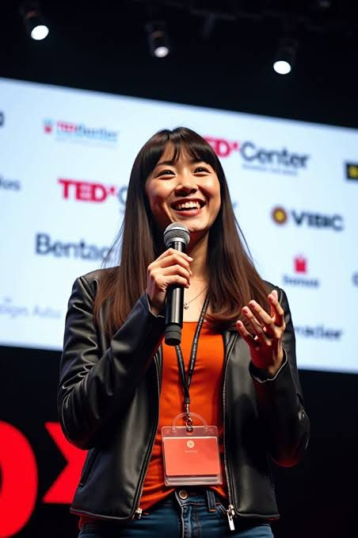

Communicate with Confidence. Advance Your Career. Connect Globally.
Professional Business Communication & Career Development
Explore specialized English and Korean communication training designed for professional interviews, business meetings, executive presence, formal business events, and global leadership.

Two Programs. Eight Professional Specializations.
Pick the professional situation you want to master, in English or Korean. Each specialization is its own 12-week course, not a level, so you can start with any of them.
| Professional focus | Professional English Business CommunicationCommunicate Your Value. Strengthen Your Professional Presence. | Korean Global Business CommunicationBridging Cultures. Elevating Professional Communication. |
|---|---|---|
| Interviews & Career Advancement | Professional Interview & Career Advancement Communication | Korean Professional Interview & Career Advancement Communication |
| Meetings, Virtual & Executive Presence | Business Meetings, Virtual Communication & Executive Presence | Korean Business Meetings, Virtual Communication & Executive Presence |
| Business Dining & Networking | Business Dining, Formal Receptions & Professional Networking | Korean Business Dining, Formal Receptions & Professional Networking |
| Global & Cross-Cultural Leadership | Global Business Leadership & Cross-Cultural Communication | Korean–American Global Business Leadership & Cross-Cultural Communication |
Learn Through Realistic Professional Practice
BPCTI combines guided instruction with professional simulations, role-play, instructor coaching, and performance-based assessment.
Participants practice realistic interviews, virtual meetings, professional introductions, formal dining conversations, and cross-cultural business scenarios, so they can apply their skills with greater clarity and confidence.
A Message from Our Founder
Communication Opens Doors. Confidence Creates Opportunities.
At BP Communication Training Institute, we believe that effective communication is more than a professional skill. It is the foundation of confidence, leadership, meaningful relationships, and opportunity.
In today's interconnected world, professional success requires more than knowledge and technical expertise. It requires the ability to express ideas with clarity, navigate cultural differences with understanding, and represent oneself with confidence and professionalism.
BPCTI was established with a clear purpose: to equip individuals with practical communication skills that strengthen their professional presence, expand career opportunities, and prepare them to succeed in diverse business environments.
Our commitment extends beyond the classroom. As a nonprofit educational institution, we believe that access to quality professional education can empower individuals, strengthen communities, and create lasting opportunities.
We are dedicated to developing confident communicators, thoughtful professionals, and globally minded leaders who can make a meaningful impact wherever their careers take them.
Abigail Ruth SungFounderBP Communication Training Institute
A Nonprofit Commitment to Professional Education
BP Communication Training Institute (BPCTI) is a DBA of Abigail Ruth Sung Foundation, a 501(c)(3) nonprofit organization.
Through professional education, scholarships, and community-focused learning opportunities, we seek to expand access to practical communication training and professional development.
Limited need-based scholarships and institutional tuition assistance may be available to eligible students, subject to eligibility requirements, available funding, program availability, and BPCTI policies.
Ready to Strengthen Your Professional Communication?
Explore the specialization that matches your goals and connect with BPCTI to discuss course availability, placement, and enrollment.